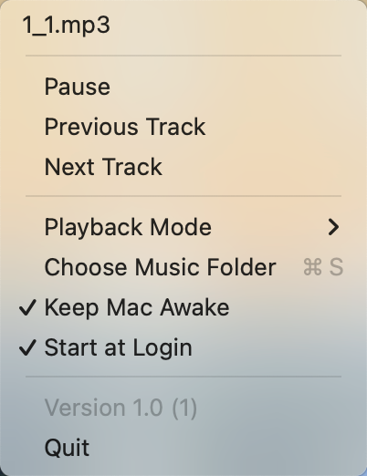

MacMusicPlayer
MacMusicPlayer is an elegant and minimalist music player for macOS, designed as a menu bar application to provide a seamless music playback experience. Built with SwiftUI, it perfectly integrates into the macOS ecosystem, delivering an exceptional user experience.

📦 Installation
Method 1: Homebrew
Need to install Homebrew first, Follow the Homebrew Installation Guide to install Homebrew.
brew tap samzong/tap
brew install samzong/tap/mac-music-player
Method 2: Download DMG
Download the latest MacMusicPlayer.dmg from the Releases page.
⚠️ About Security Warnings
Since the app is not notarized by Apple, you may encounter a security warning when first launching it. This is a macOS security feature and does not indicate any security issues with the app.
Solution:
- Right-click on the app and select "Open" (instead of double-clicking)
- In the dialog that appears, click "Open"
- After this, the system will remember your choice and allow normal usage
For Homebrew users: The installation script automatically handles this issue, no additional steps required.
If you still can't open the app, run this command in Terminal:
xattr -dr com.apple.quarantine /Applications/MacMusicPlayer.app
🚀 Usage Guide

- On first launch, click the menu bar icon and select "Set Music Source"
- Choose a folder containing MP3 files
- Access the following features through the menu bar icon:
- Play/Pause
- Previous/Next Track
- Switch Playback Mode
- Download Music from Online Sources
- Enable/Disable System Sleep Prevention
- Configure Launch at Login
- Reconfigure Music Folder
✨ Key Features
- 🎵 Lightweight menu bar player for instant music control
- 🎨 Native macOS interface with perfect light/dark theme support
- 🌍 Multi-language support (English, Simplified Chinese, Traditional Chinese, Japanese, Korean)
- 🎧 MP3 audio format playback
- 🔄 Multiple playback modes (Sequential, Single Loop, Random)
- 📥 Download music from online sources (YouTube, SoundCloud, etc.)
- 💾 Smart memory of last music folder location
- 🚀 Launch at login support
- 😴 Prevent system sleep for uninterrupted music
- ⌨️ Media key control support (Play/Pause/Previous/Next)
🛠 Technical Architecture
- Framework: SwiftUI + AppKit
- Audio Engine: AVFoundation
- Design Pattern: MVVM
- Localization: Multi-language support
- State Management: Native SwiftUI state management
- Persistence: UserDefaults
- System Integration:
- MediaPlayer framework for media control
- ServiceManagement for launch at login
- IOKit for sleep management
- Download Engine:
- yt-dlp for online media extraction
- ffmpeg for audio conversion
🔨 Development Guide
Requirements
- macOS 13.0+
- Xcode 15.0+
- Swift 5.9+
- For music download feature: yt-dlp and ffmpeg (can be installed via Homebrew)
Build Steps
- Clone the repository
git clone https://github.com/samzong/MacMusicPlayer.git
- Open the project
cd MacMusicPlayer
open MacMusicPlayer.xcodeproj
- Build and Run
- Using Xcode: Command + R
- Using command line:
make build
Project Structure
MacMusicPlayer/
├── Managers/ # Business Managers
│ ├── PlayerManager # Playback Control
│ ├── LaunchManager # Launch Management
│ ├── SleepManager # Sleep Control
│ └── DownloadManager # Music Download
├── Models/ # Data Models
├── Views/ # UI Components
├── Helpers/ # Utility Classes
└── Resources/ # Resource Files
Localization Support
The project supports multiple languages with localization files located at:
MacMusicPlayer/en.lproj/MacMusicPlayer/zh-Hans.lproj/MacMusicPlayer/zh-Hant.lproj/MacMusicPlayer/ja.lproj/MacMusicPlayer/ko.lproj/
🤝 Contributing
- Fork the repository
- Create your feature branch (
git checkout -b feature/AmazingFeature) - Commit your changes (
git commit -m 'Add some AmazingFeature') - Push to the branch (
git push origin feature/AmazingFeature) - Open a Pull Request
📝 Development Roadmap
- Support for downloading music from online sources
- Support for more audio formats (FLAC, WAV, AAC, etc.)
- Add audio visualization effects
- Playlist management support
- Add audio equalizer
- Online music service integration
- Add keyboard shortcut support
- Audio format conversion support
📄 License
This project is licensed under the MIT License - see the LICENSE file for details
🌟 Star History
🙏 Acknowledgments
Thanks to all the developers who have contributed to this project!
For questions or suggestions, please feel free to open an Issue or Pull Request.